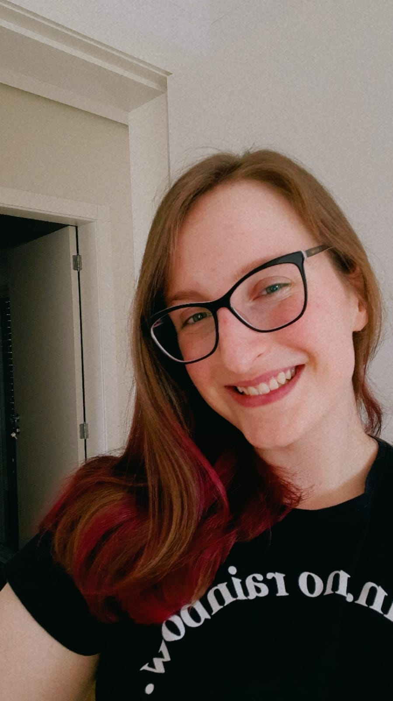
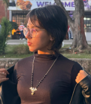

ISABELLE
Bióloga e acadêmica de Ciências da Computação
Isabelle é gaúcha de Nova Bassano, bacharel em Ciências Biológicas formada em 2024 e atualmente é estudante do primeiro semestre do curso de Ciência da Computação, pela UPF.

IZADORA
Estudante de Ciências da Computação
Natural de São Pedro do Sul, Izadora é estudante de Ciência da Computação na Universidade de Passo Fundo. Tem interesse em tecnologia, finanças e investimentos, buscando sempre ampliar seus conhecimentos nessas áreas.
LAÍS FÁTIMA SIQUEIRA
Bióloga e Estudante de Ciências da Computação
Laís é gaúcha de Passo Fundo, formada em Ciências Biológicas há 15 anos e atualmente está cursando o primeiro semestre de Ciências da Computação, pela Universidades de Passo Fundo.